Linux剑法（第六式）
shell编程
当我们将来走上江湖，我们不止要会这一种剑法，我们还有和其他剑法一起使用，这个时候为了可以更为便捷，更为流畅的使用这些剑法，学会怎么写一个shell脚本是必不可少的，比如我们在进行服务器维护的时候，可能就会需要编写一个脚本来定时备份数据库。
shell是什么
知道shell可以做什么了，可是什么是shell呢？shell是一个命令行解释器，它为用户提供了一个向Linux内核发送请求以便运行程序的界面系统级程序，用户可以通过shell来启动、挂起、停止甚至是编写一些程序。当然Linux不止一个shell，我们常用的是bash。
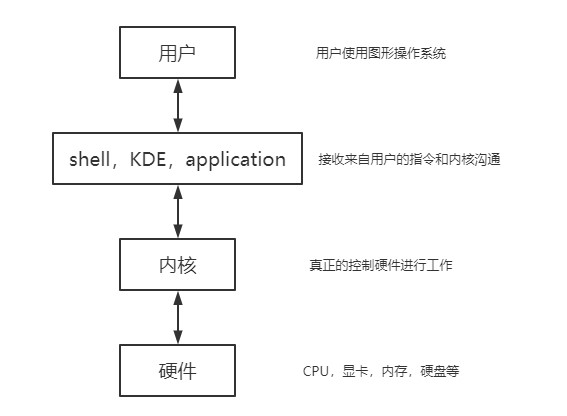
shell脚本的执行方式
学习shell和我们学习其他语言是一样的我们先来看一下格式的要求，首先脚本要以**#!/bin/bash开头，其次脚本要有可执行的权限。脚本常用的执行方式有两种，一是要先赋予我们写好的脚本文件x权限，然后输入脚本的绝对路径或相对路径执行，二是使用sh 脚本**这个指令来执行。
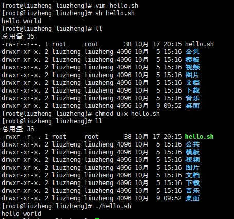
shell的变量
之前我们在汇编的学习中提到了，一个有用的程序，多半会存在变量，shell编程也是如此。Linux shell中的变量分为，系统变量和用户自定义变量，系统变量包括$HOME、$PWD、$SHELL、$USER等等，我们可以用set指令显示所有变量。
用户自定义变量的基本语法是：变量名=值，注意在Linux中指令对空格的检测很严格，所以一定要仔细看接下来的指令中是否含有空格，这点很重要！当我们需要删除一个变量的时候我们可以使用指令unset 变量名来进行销毁，我们还可以声明一个静态变量使用指令readonly变量，静态变量不可以被unset销毁掉。当我们输出一个变量的时候我们可以使用指令echo $A，注意$符号，当我们定义变量的时候不需要$但输出的时候需要（tips：#表示注释，多行注释为:<<!……!）。
1 | !/bin/bash |
结果：
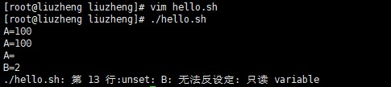
在高级语言中，变量的定义是有规则的，在shell编程中也不例外，shell编程中，变量的名称可以由字母、数字和下划线组成，但不能以数字开头，变量定义时等号两边不能有空格，变量名称一般习惯为大写。
当我们希望将一个指令的返回值赋给一个变量，那我们需要使用反引号`（~键）或$()将指令包起来，否则shell认为是将指令本身赋给变量。例如：
1 | !/bin/bash |
结果：
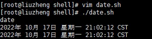
设置环境变量
基本语法：export 变量名=变量值，用来将shell变量输出为环境变量（可以理解为全局变量，需要在/etc/profile中定义）
source 配置文件，用来让修改后的配置信息立即生效
echo $变量名，用来查询环境变量的值
1 | vim /etc/profile最下面,如果出现swap交换文件输入e即可 |
结果：
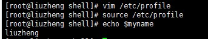
位置参数变量
当我们执行一个shell脚本时，如果希望获取到命令行的参数信息，就可以使用到位置参数变量比如./myshell.sh 100 200，这就是一个执行shell的命令行，可以在myshell中获取到参数信息。
基本语法：
$n，n为数字，0代表命令本身，1-9代表第一个到第九个参数，十以上的参数需要用大括号包含如：${10}。
$*，这个变量表示命令行中所有的参数，它把所有参数看成一个整体。
$@，这个变量也代表命令行中所有参数，不过它把每个参数区分对待。
$#，这个变量表示命令行中所有参数个数，类似高级语言中main函数的变量argc。
1 | !/bin/bash |
结果：
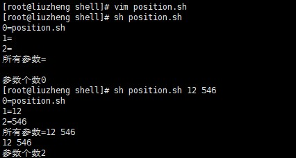
预定义变量
预定义变量是shell设计者已经实现定义好的变量，可以直接在shell脚本中使用，常用的有三个：
- $$，代表当前进程的进程号PID
- $!，代表后天运行的最后一个进程的进程号PID
- $?，代表最后一次执行的命令的返回状态，如果上一个命令正确执行那么返回的值为0，如果这个值非0着表示上一个命令执行不正确，至于错误后返回的到底是多少，由命令自己决定。
1 | !/bin/bash |
结果：
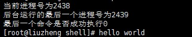
运算符
我们在学习C语言的时候，肯定做过加法减法的程序，当然这也是计算机最基本的操作了，现在我们在shell中看看如何进行运算。
基本语法：
- $((运算式))或$[运算式]或者expr m +(-) n(注意格式)
- 注意运算符间要有空格
- 注意expr中乘法的写法为\*做转义操作
- 在使用expr进行运算时，如果要将计算结果赋值给一个变量，需要将运算式用反引号``括起来
1 | !/bin/bash |
结果：
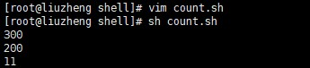
我们也可以通过之前学习的位置参数变量来优化脚本！
流程控制
我们在编写一个程序的时候，会对一些事情进行判断，如果满足了某一条件，我们就进行一系列操作，反之我们有别的应对，这个时候就要知道流程控制语句。
if语句
基本语法：if [ condition ]（注意格式，condition前后都有空格）then …… fi，如果非空返回true。
我们在shell编程中常用的判断条件有四类：
1.字符串比较
- =
2.两个整数比较
- -lt 小于
- -le 小于等于
- -eq 等于
- -gt 大于
- -ge 大于等于
- -ne 不等于
3.按照文件权限进行判断
- -r 有读的权限
- -w 有写的权限
- -x 有执行的权限
4.按照文件类型进行判断
- -f 文件存在且是一个常规的文件
- -e 文件存在
- -d 文件存在且是一个目录
1 | !/bin/bash |
结果：
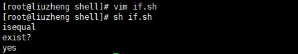
if elif语句
我们已经学会了如何使用if，但有的时候判断会进行很多次，这个时候就要用到了else if，所以我们来看一下shell编程中else if是什么样子的。
基本语法（注意格式）：
if [ condition ]then …… fi 或者 if [ condition ]then …… elif [ condition ] then …… fi
注意[ condition ]，中括号和condition之间必须有空格！！
1 | !/bin/bash |
结果：
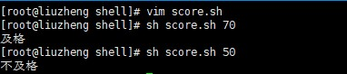
case语句
基本语法：
case $变量名 in 值1 )程序1;; 值2)程序2;; 值3)程序3;;…… * )如果变量的值都不是以上的值，执行本程序;; esac
1 | !/bin/bash |
结果：
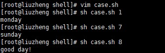
循环
现在我们需要像屏幕上输出1行hello world，你会选择使用echo hello world完成，如果我们需要输出10条，你可能会使用yy，p来完成，可是如果我们需要输出100条甚至更多呢？这个时候就要使用循环。
for循环
基本语法：
for 变量 in 值1 值2 值3 … do …… done
for(( 初始值;循环控制条件;变量变化 ))do……done
我们这里顺便使用for循环来看一下$*和$@的区别。
1 | !/bin/bash |
结果：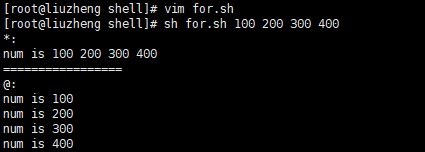
1 | !/bin/bash |
结果：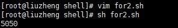
while循环
基本语法：
while [ 条件判断式 ]do……done，注意while和[之间的空格，条件判断式前后的空格。
1 | !/bin/bash |
结果：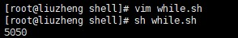
read读取控制台输入
基本语法：read (选项) (参数) 变量，用来读取键盘输入
选项：-p：指定读取值时的提示符
-t：指定读取值时等待的时间(秒)，如果没有在指定的时间输入，就不在等待了
1 | !/bin/bash |
结果：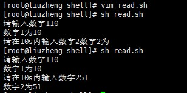
函数
shell编程和其它的编程语言一样有函数的存在，函数可以被分为系统函数和自定义函数，接下来我们就来了解一下。
系统函数
1.基本语法：basename [pathname] [suffix]
basename [string] [suffix]
basename指令会删掉所有的前缀包括最后的一个/字符，然后将字符串显示出来。
选项：suffix为后缀，如果suffix被指定了，basename会将pathname或string中的suffix去掉。
结果：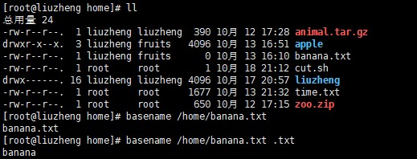
2.基本语法：dirname 文件绝对路径
dirname指令从给定的包含绝对路径的文件名中去除文件名，然后返回剩下来的路径。
结果：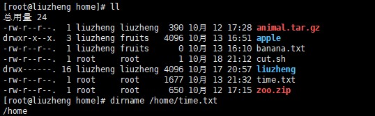
自定义函数
基本语法：
1 | function funname() |
当我们需要调用我们的自定义函数的时候，只需要写函数名即可。
1 | !/bin/bash |
结果：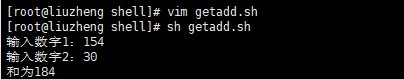
 wechat
wechat alipay
alipay